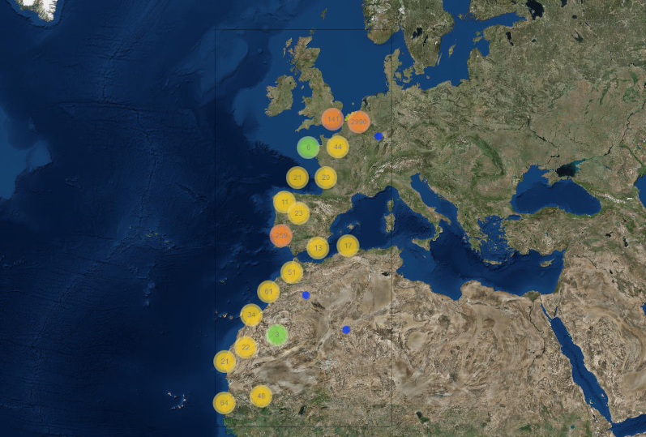

vignettes/lwdata_uva.Rmd
lwdata_uva.RmdExploring bird GPS tracking data

Data from the Lifewatch bird tracking project collected by stations in Ostend, Zeebrugge and Vlissingen.
- Partners: Research Institute for Nature and Forest (INBO), University of Ghent (UGent), University of Antwerpen, Flanders Marine Institute (VLIZ) and University of Amsterdam (UvA)
- Period: since May 2013
- Geographical coverage: Europe and Africa.
- Taxonomic coverage: Herring Gull (HG; Larus argentatus), Lesser Black Backed Gull (LLB; Larus fuscus) and Marshal Harrier (MH; Circus aeruginosus).
- Moratorium: Marshal Harrier data is only available upon registration. Login or register to get full access
- Data quality: Research-grade
How to interpret this dataset
Query options
-
Birds or Tag Codes: Tag number that identifies the birds. You can select specific birds or all together with
All HG(Herring Gull),All LBB(Lesser Black Backed Gull)1 orAll MH(Marshal Harrier). - Sample period: Counts aggregated. One of 1 week, 1 day, 60 min, 10 min or 1 min.
- Timeframe: Starting and stopping date for the query.
Available columns
- Code : Code of device on / in individual.
- Time : Time in UTC, beginning of sample timeperiod.
- Species : HG = Herring Gull , LBB = Lesser Black Backed Gull, MH = Marshal Harrier.
- Longitude : Center longitude in decimal degrees, WGS84.
- Latitude : Center latitude in decimal degrees, WGS84.
- Tracklength : Length of the track in meters.
- Maxdist : Maximum distance from nest.
- Tracktime : Length of the track in hours.
- Counts : Total GPS fixes or detections.
- Logcounts : Natural logarithm of the counts.
Abstract
In the framework of the Flemish contributions to the LifeWatch infrastructure, a high-tech sensor network was installed to better monitor the habitat use and migration patterns of large birds, such as the European Herring Gull (Larus argentatus Pontoppidan, 1736), the Lesser Black-backed Gull (Larus fuscus Linnaeus, 1758) and the Western Marsh Harrier (Circus aeruginosus (Linnaeus, 1758)).
The research is led by INBO, in collaboration with the Terrestrial Ecology Unit (TEREC) at the University of Ghent, and the University of Amsterdam (UvA, LifeWatch coordinator in the Netherlands). The Flanders Marine Institute (VLIZ) participates in the installation, maintenance and data flows of the sensor network.
All equipment is developed by the Institute for Biodiversity and Ecosystem Dynamics (IBED) at the University of Amsterdam: the Bird Tracking System (UvA-BiTS).
How to cite these data
Flanders Marine Institute (VLIZ), Terrestrische Ecologie Ugent (TEREC), Institute for Biodiversity and Ecosystem Dynamics (IBED), Instituut voor Natuur-en Bosonderzoek (INBO), Belgium (2015): LifeWatch observatory data: bird GPS tracking https://www.vliz.be/en/imis?module=dataset&dasid=5249. Accessed through the LifeWatch Data Explorer / lwdataexplorer R package.
Availability: This dataset is licensed under a Creative Commons Attribution 4.0 International License.
This dataset is licensed under a Creative Commons Attribution 4.0 International License.
Please acknowledge as: This work makes use of the LifeWatch observation data and infrastructure (provided by INBO, UGent, University of Antwerpen, UvA and VLIZ) funded by Research Foundation - Flanders (FWO) as part of the Belgian contribution to LifeWatch.
These data are also available in the R language with the lwdataxplorer package.
1 The correct abbreviation for the Lesser Black-Backed Gull is LBBG. We first used LBB and we keep this for reproducibility.